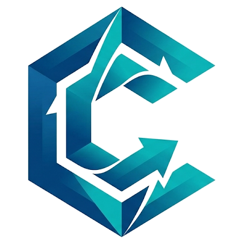

End-to-end ERP services, one accountable team.
From the first business case to steady-state support, CoreTech covers every stage of the ERP lifecycle — so nothing gets lost between handovers.
ERP Strategy & Selection
Choosing and planning an ERP programme is a business decision before it's a technology one. We help leadership teams understand what they have, what they need, and the most sensible route between the two.
Our advice is vendor-neutral and grounded in your processes, budget and appetite for change — so you invest in the platform and scope that fit, not the one with the loudest pitch.
Not sure where to start? Take the readiness checkWhat you get
- Current-state assessment & ERP health check
- Requirements, RFP support and vendor scoring
- Business case, TCO and phased roadmap
- Programme governance and change strategy
Implementation & Configuration
We configure, migrate, test and take live financials, human capital management and payroll for organisations operating across multiple countries and entities.
Functional consultants and technical engineers work side by side, with regular playbacks so your stakeholders see — and shape — the system as it's built.
Modules we deliver
Built in from day one
- Security roles and segregation of duties
- Custom approval workflows and business processes
- Employee and manager self-service
Modernisation & Data Migration
Legacy ERP and on-premise HR systems hold years of business history. We profile that data, map it to the new platform's objects and flag reconciliation gaps long before cutover.
Every load is repeatable, every variance is tracked, and nothing goes live until totals match the source — down to the cent.
Our migration playbook
- Data profiling and quality scoring
- Source-to-target mapping and transformation rules
- Mock conversions with automated reconciliation
- Cutover runbook, rollback plan and sign-off
Common sources
Integrations & payroll connectivity, bidirectional by design.
Many organisations keep specialist payroll providers for tax expertise or country coverage. We build and operate the integrations that keep everything in sync — scheduled, monitored and audited.
ADP Workforce Now & GlobalView
Worker, pay group, earnings, deductions, tax data and pay results flowing on prebuilt and custom connectors.
Dayforce
Worker sync, time and attendance hand-off, pay result return and a unified general ledger.
SAP & SuccessFactors Payroll
HCM as system of record with SAP payroll downstream, including cost-centre mapping and pay-period sync.
Regional & country payrolls
Local providers across regions — outbound HR feeds, inbound results and retro-pay handling.
CRM & service platforms
Salesforce, ServiceNow and in-house APIs called with retry logic, exception handling and a full trace.
Banking & benefits carriers
Payment files, bank statements and benefits carrier feeds configured to match your provider ecosystem.
Analytics & Reporting
Leadership doesn't want another spreadsheet export. We blend ERP data with CRM, data warehouses and legacy sources, then surface the answer inside the tools your teams already trust.
Templated pipelines turn "we'd like to see…" into a live, governed dashboard in weeks — with one permission model across every source.
Typical outcomes
- Finance and workforce dashboards for the board
- Headcount, attrition and pay-equity insight
- Cost and headcount planning models
- Forecasting and anomaly detection
Data we connect
Managed Services & Support
Go-live is the beginning. Our application management service keeps your ERP stable, compliant and improving with every vendor release.
With teams across time zones, tickets are picked up while your business sleeps — and every change is logged, approved and reversible.
Service coverage
- Follow-the-sun functional and technical support
- Release reviews and regression testing
- Payroll run support and year-end processing
- Enhancement backlog and continuous optimisation
Questions we're often asked.
It depends on scope, number of countries and integrations. A focused single-entity deployment can go live in a few months; multi-country finance and HCM programmes usually run longer. We give you a phased plan with clear milestones after discovery.
Yes. We regularly run rapid health checks on stalled or at-risk programmes, stabilise the build and get delivery back on track — with a candid assessment of what needs to change.
Not at all. Many clients keep specialist or regional payroll providers. We build bidirectional integrations so your ERP stays the system of record while pay results and GL entries flow back automatically.
Data stays in your governed environment wherever possible — no unmonitored exports or shadow copies. Every deployment and integration change has an owner, an approval trail and a rollback path, and we work within GDPR and your internal security policies.
Every implementation includes a hypercare period. After that, you can move to our managed services with agreed service levels, follow-the-sun coverage and a dedicated lead who knows your configuration.
Let's map the right next step for your ERP.
A 30-minute conversation with a senior consultant — we'll listen, ask the hard questions and tell you honestly where we can help.